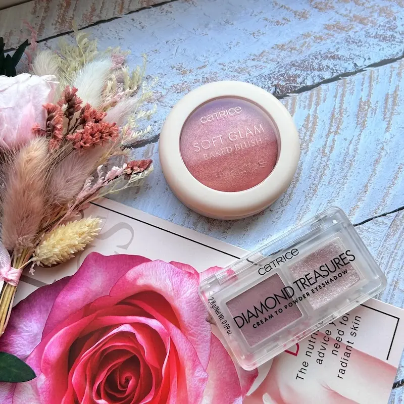
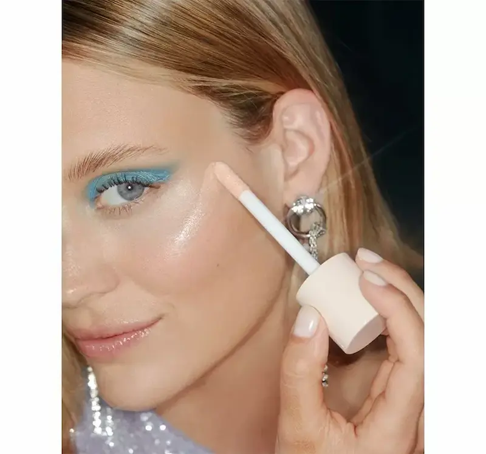

Гид по странице макияж Soft Glam
Пошаговый Soft Glam макияж
Элегантный и мягкий образ без перегруженности
Топ средств для Soft Glam макияжа
Натуральные текстуры с мягким сатиновым финишем
Премиум-средства для Soft Glam
Эффект «дорогого» макияжа и идеальной кожи
Бюджетный набор Soft Glam (до 500 MDL)
Минимальный набор для элегантного образа
Запишитесь к профессиональному визажисту
Запишитесь на Soft Glam макияж в Молдове и получите элегантный, мягкий и «дорогой» образ с идеальной растушёвкой и естественным балансом.
Что такое Soft Glam макияж
Soft Glam макияж — это техника, которая создаёт мягкий, элегантный и ухоженный образ с акцентом на естественную красоту лица. Это баланс между натуральным макияжем и вечерним образом — без резких линий и перегруженности.
Такой макияж часто называют soft glam look, natural glam или мягкий глам. Он подчёркивает черты лица, делая их более выразительными, но при этом сохраняет лёгкость и аккуратность.
В отличие от яркого вечернего макияжа, здесь используются растушёванные текстуры, нейтральные оттенки и мягкие переходы. Кожа выглядит ровной и ухоженной, глаза — выразительными, а общий образ — гармоничным и «дорогим».
Soft Glam идеально подходит для свадеб, фотосессий, мероприятий и повседневной элегантности — он делает лицо более свежим, утончённым и визуально молодым.
👉 Подробнее о макияже для жирной кожи
👉 Подробнее о макияже для сухой кожи
Почему Soft Glam макияж делает лицо более свежим и ухоженным
- создаёт эффект аккуратного и «собранного» образа
- подчёркивает черты лица без резкости и перегруженности
- визуально выравнивает тон кожи и смягчает текстуру
- делает лицо более молодым и гармоничным
- выглядит элегантно и «дорого» даже при минимуме средств

Подготовка кожи для Soft Glam макияжа
Soft Glam макияж начинается с качественной подготовки кожи. Даже самые дорогие продукты не создадут эффект идеальной и гладкой кожи, если она обезвожена или имеет неровную текстуру.
Правильный уход помогает добиться ровного тона, мягкого сияния и обеспечивает аккуратное нанесение макияжа без перегруженности.
- Очищение — деликатное средство без пересушивания кожи
- Увлажнение — крем или сыворотка для гладкости и эластичности кожи
- SPF — защита от UV и сохранение ровного тона
- База под макияж — выравнивает текстуру и продлевает стойкость
Перед нанесением макияжа важно подождать 5–10 минут, чтобы средства полностью впитались. Это позволит добиться ровного покрытия и избежать скатывания продуктов, сохраняя аккуратный и элегантный вид в течение дня.

Пошаговый Soft Glam макияж


Soft Glam макияж строится на принципе мягкости, растушёвки и баланса. Его задача — подчеркнуть черты лица и создать элегантный, ухоженный образ без резких линий и перегруженности. Такой стиль идеально подходит для мероприятий, фотосессий и повседневной элегантности.
Лёгкий или средний тон
Используйте тональное средство с натуральным или сатиновым финишем. Покрытие должно выравнивать кожу, но выглядеть естественно — без эффекта маски.
Консилер
Наносите точечно под глаза и на несовершенства. Важно сохранить свежесть кожи и избежать перегруженности слоями.
Скульптор и бронзер
Лёгкое контурирование помогает подчеркнуть черты лица. Используйте мягкие, хорошо растушёванные текстуры без резких линий.
Румяна
Натуральные оттенки придают лицу свежесть. Лучше выбирать кремовые или сатиновые текстуры для мягкого эффекта.
Глаза
Нейтральные тени (бежевые, коричневые, тёплые оттенки) с мягкой растушёвкой. Можно добавить лёгкое затемнение внешнего уголка для глубины взгляда.
Брови и ресницы
Аккуратная форма, мягкая фиксация и естественный объём. Без графичных линий — акцент на натуральности.
Губы
Нюдовые оттенки, блеск или кремовая помада. Губы должны выглядеть ухоженно и гармонично дополнять образ.
Soft Glam макияж создаёт эффект «дорогого» и ухоженного образа — мягкий, сбалансированный и универсальный стиль без перегруженности.
Топ средств для Soft Glam макияжа
Для Soft Glam важно выбирать продукты с мягким финишем, хорошей растушёвкой и эффектом «второй кожи», которые подчёркивают черты лица, а не перегружают их.
Независимый обзор. Продукты не спонсируются.


Премиум-средства для Soft Glam макияжа
Независимый обзор. Продукты не спонсируются.
Премиум-продукты для Soft Glam создают эффект «дорогой кожи»: идеально растушёванный тон, мягкое свечение и безупречная текстура без перегрузки.


Частые ошибки в Soft Glam макияже
- слишком плотный и «тяжёлый» тон без естественности
- резкие линии и плохая растушёвка теней
- слишком тёмный или перегруженный контуринг
- избыточный хайлайтер с заметными блёстками
- перегруженные брови и слишком графичная форма
Soft Glam макияж легко испортить: вместо элегантного и дорогого образа можно получить перегруженный или «грязный» макияж. Главный принцип — мягкость, растушёвка и идеальный баланс между акцентами.

Бюджетный набор для Soft Glam макияжа (до 500 MDL)
💡 Общая стоимость набора: ~450–520 MDL
Независимый обзор. Продукты не спонсируются.


Как добиться Soft Glam эффекта (элегантного и мягкого образа)
Главная ошибка в Soft Glam — делать макияж слишком ярким или тяжёлым. Этот стиль — про дорогую мягкость, идеальную растушёвку и баланс, а не про яркие контрасты или плотные текстуры.
1. Идеальный тон — основа всего
Кожа должна выглядеть ровной, гладкой и ухоженной. Используйте тон с натуральным или сатиновым финишем — без эффекта маски.
2. Мягкая растушёвка теней
В Soft Glam нет резких линий. Тени должны плавно переходить друг в друга, создавая эффект «дымки» и глубины взгляда.
3. Контуринг без перегрузки
Лёгкий контуринг подчёркивает черты лица, но остаётся незаметным. Никаких резких линий — только мягкая тень.
4. Баланс сияния и матовости
Лёгкий хайлайтер добавляет свежести, но не должен доминировать. Важно сохранить эффект «дорогой кожи», а не блеска.
5. Акцент, но не перегрузка
Soft Glam — это баланс: либо акцент на глаза, либо на губы. Перегрузка делает образ тяжёлым и убивает элегантность.
Идеальный Soft Glam — это макияж, который выглядит дорого, аккуратно и безупречно растушёванным, словно ваша кожа и черты лица просто стали лучше, а не «накрашены».
Не уверены, как добиться идеального сияния кожи?
Любой макияж требует точного баланса: правильный уход, лёгкие текстуры и техника нанесения. Один неверный шаг — и вместо сияния появляется жирный блеск или перегруженный тон.
Запишитесь к профессиональному визажисту и получите макияж, который подчеркнёт вашу кожу, создаст эффект «сияния изнутри» и будет выглядеть естественно при любом освещении.
Записывайтесь на макияж.

Частые вопросы о макияже Soft Glam
Подходит ли Soft Glam для жирной кожи?
Да. Главное — правильно подготовить кожу и использовать лёгкие матирующие продукты в Т-зоне. Soft Glam не требует сильного сияния, поэтому легко адаптируется под жирную и комбинированную кожу.
Чем Soft Glam отличается от вечернего макияжа?
Soft Glam выглядит мягче и естественнее. В нём нет резких линий и плотных текстур — акцент делается на аккуратной растушёвке, нейтральных оттенках и «дорогом» эффекте кожи.
Можно ли сделать Soft Glam при акне?
Да. Используйте среднее покрытие и точечную коррекцию. Важно хорошо растушёвывать продукты и избегать плотных слоёв, чтобы сохранить естественный вид кожи.
Подходит ли Soft Glam для повседневной жизни?
Да, это один из самых универсальных вариантов. Если сделать его в более лёгкой версии — без плотного контуринга и ярких акцентов — он идеально подойдёт для работы, встреч и повседневных образов.
Обязателен ли контуринг в Soft Glam?
Нет. Контуринг может присутствовать, но он должен быть мягким и хорошо растушёванным. Главная цель — подчеркнуть черты лица, а не изменить их.
Как добиться эффекта «дорогого» макияжа?
Секрет Soft Glam — в деталях: ровная кожа, плавные переходы теней, аккуратные брови и гармоничные оттенки. Важно избегать резких линий и перегруженности, делая макияж максимально чистым и сбалансированным.